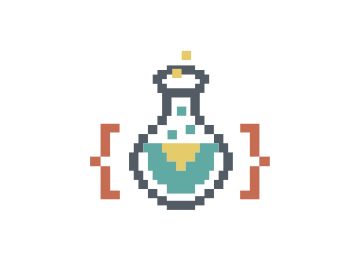

Andres Monge

Technical Lead / Architect
+34 (622) 505-729
Download PDF
Profile
I translate KPI's into technically requirements and tasks, detailed enough to be ready to code and abstract enough to be fully described in a business and functional language. With a full background in developing and leading I can successfully teach, coach, guide and sustain a productive team to build.
As an architect my task is make high level design choices, identify the best software infrastructure for the project in hand, identify and design key components interfaces. Since I've started as developer I coach and guide the teams by pair programming and also I can take over difficult and key developments, besides of fully supporting the team in front-end, back-end, middle-ware, and dev-ops.
As a leader I create project guidelines and asure company's vision or product requirements are fully comprehended and followed by teams members. I consider my self the bridge between the most and the least technical members of the team, proving a flow in the communication of business and technical values.
_I also carry the electronic version of the curse of Cassandra. I'm able to see the future of technology and any project, due to my clear vision of the risks and strengths of all software life cycle_
Skills
- Team leader
-
Experience since 2015 leading teams guiding members into their self-taught capacities, improving the value of the team as a whole. I'm recurrently able to transform junior and newbies developers into a senior quality developers. Moving from leading 3 people into leading 15 in 2020.
- Empowering
-
Since my career started form developer all they way up to technical lead, I can easily share my knowledge to both developers and producto owners. I usually prefer teaching people to learn how overcome problems, rather than giving them the solution; this allows me to work smarter and not harder. My communication skills are in constant evolution and since 2017 I'm proud to keep in touch with developer that have become architects after working with me.
- Scientific approach
-
IT is always moving forward at high speeds, therefore I'm obligated to perform a full research any time there's a suggestion or a new requirement. My research tends to compare fully all the alternatives, in order to be sure we have chosen the best current solution. mY Creativity, mixed with de detail oriented allows me to have innovative and valuable results.
Front-End
- JavaScript, 12 years. Master
- XHTML, 12 years. Master
- CSS/SASS/LESS, 12 years. Master
- (JS) Polymer 4 year
- (JS) React 1 year
- (JS) React-Native 1 year
- (JS) FlighJS 1 year
- (JS) AngularJS 2 year
- (JS) Angular 1 year
- (JS) BackboneJS 2 year
Back-End
- MuleSoft, 1 years. Leading
- PHP, 3 years. Advanced
- nodeJS, 4 years. Standard
- Ruby/Rails, 1 year. Standard
Databases
- MySQL, 3 years. Advanced
- mongoDB, 4 years. Standard
Servers / Cloud
- Linux, 14 years. Master
- (Linux) Amazon Web Services. 5 Years. Advanced
- (Linux) Jenkins. 3 Years. Advanced
- (Linux) Docker. 2 Years. Advanced
- Apache, 3 years. Advanced
- nginx, 7 years. Standard
Work Flows
- Git, 11 years. Master
- Svn, 3 years. Standard
- Jira, 9 years. Advanced
- Cordova / iOs, 1 years. Standard
- Cordova / Android, 1 years. Standard
- Cordova / Windows Tablets, 1 years. Standard
Experience
- Global Banking APIs @ GFT / Santander Global Tech
- Technical lead / Architect (Spain)
2019-20XX
As a technical lead, I'm responsible of the technical coordination and alignment of a team, which is composed of three squads (5 members) on Spain and seven on the USA. The goal of this project it to modernize the back-end services in the bank using MuleSoft. I've successfully lead the squads with product owners comprehension, into an ATDD continuos delivery methodology. My daily work is to ease the developers work and at the same time raise the quality of our work overall, through architectural definitions, spike improvements and constant research.
- Components catalog @ GFT / Santander Global Tech
- Product Owner / Front-End Architect (Spain)
2017-2019
As a architect and product owner. I was tasked to identify key components and features to develop with help of a team, to maximize the value provided by our software stack used by Santander Group. Used by more than 10 teams without it being obligatory; our goal is to build it so robust, flexible and simple that it becomes an attractive asset rather than an obligation.
- I+D Architectural documentation @ GFT / Santander Global Tech
- Product Owner / Front-End Architect (Spain)
2017-20XX
As an architect I was tasked to create architectural and guideline documents with the help of a team. The main architectural document stated the chosen framework (Angular), key software principles such as micro-front, SOLID-ness and event driven, and the software guidelines for the group. Also I’m tasked to keep the document a live and updated with the latest technology trends, software updates and deprecations.
- MyPage @ GFT / Santander Global Tech
- Product Owner / Front-End Architect (Spain)
2017-20XX
As a producto owner I decided to take a flexible grid system to bring customer’s personalization into the financial world. As an architect I guide the multidisciplinary team to build the software in a coherent, modular and iterative life cycle. As the team used several and new technologies, I overcome my lack of specific technical knowledge with my broad vision and my abstract and root knowledge of any software.
- SIO-100 (a Artificial Intelligence project) @ bonial / kaufda.be
- Front-End Architect / Team leader (Germany)
2016-2017
As an architect, I’ve decided to use Polymer for the project (AI decisions confirmations) since the team is distributed in small standalone micro-services so relaying on scope protection and encapsulation that polymer provides increased the productivity of the front-end screens. Replicated the environment of previews projects TDD, CI, Artifactory and an atomic modular designe pattern.
kaufda
- TabletBanking @ s|ngular / BBVA Compass
- Front-End Architect / Team leader (USA)
2015-2017
As an architect, I’ve successfully guided a junior team with five team members to estimate, analyze and develop
feature requested by product owner and architects. We used a TDD methodology and a component-based project adding up to
230 (Polymer.js) web-components. We delivered to tablet, mobile and desktop applications using contiguous integration (jenkins), Cordova and artifactory to host the components as dependencies.
TabletBanking
- Hoy Necesito @ s|ngular / BBVA
- Front-End team leader (Spain)
2014-2015
As a team lead I helped product owners with estimations, and created an analysis for the features requested. I’ve taught the team Angular.js in the most component based way (mainly using ngModules and directives). As a senior developer I wrote a full page feature in ReactJS wrapped inside and Angular directive. The focus on react was performance since the feature required a live update of a calendar events. We also relayed on GULP / GRUNT to deliver our code and Git-flow to ensure code maintenance
- Online Banking @ s|ngular / BBVA Compass
- Front-End developer (Spain)
2013-2014
As a senior developer I’ve help in the process of changing the mindset form classic MVC/jQuery into a modular/component-based development. We used FlightJs as our main framework under SCRUM/Agile workflow. The project relied on the template engine and few key JavaScript components (which I was the lead developer for).
bbvacompass
- Universidad Rey Juan Carlos
- Web Developer (Spain)
2013
As a full-stack developer I created a dynamic template and plugins for a Joomla based web. The initial solution was based in Word-press with an ad-hock WYSIWYG to provide the ability of creating and modifying pages. After moving the project into Joomla the template was build with a lot of flexibility.
URJC
- Component Catalogue @ Adesis / Mapfre
- Front-End Architect / Expert Developer (Spain)
2013
As a expert reference I was responsible for code reviews, code analysis and quality assurance that the developers of Mapfre (the client) delivered. I had improve the current developers skills, practices and guiding them into the best developers. Our main area of focus was JavaScript, Angular, CSS and Jade as the template engine.
- Personal Finance Manager @ Adesis
- Front-End Developer (Spain)
2013
As a full-stack developer In little less than a month and a half, I’ve develop by my self a fully operational finance manager. Provided with the graphical designes I build the app using nodeJS (sails) and AngularJs from scratch. I’ve made the all the decisions including the architecture, technologies and work-methodology. The project was latter on improved and used for years.
- RedPacientes, social network @ CBI
- Full-Stack Developer (Spain)
2011-2013
As a full-stack developer I used mainly SQL functions, a PHP controller and JavaScript(backbone) for the front-end.
I Also helped developing modules of a bigger app that was being built. We were replication a CRM (such as SAP), providing support by IE7 and greater, besides modern browsers. Everything done with a proprietary framework which we also had to maintain and update.
Red Pacientes
- No llores Patito
- Full-Stack Developer (Spain)
2011
Online shop, created with a custom framework similar to CakePHP. The main focus was over the framework built on PHP,
the front-end was basically tweaking a paid template.
No Llores Patito
- Ananda Pascual
- Full-Stack Developer (Spain)
2010
Online store for clothing. Built with osCommerce, and few ad-hock plugins to manage the landing page. There was also a TPV (payment conector) to develop and integrate with Spanish banks (CajaMar and CajaSol), and a API integration with real-time stock handling service (“seleris”).
Ananda Pascual
- Los hijos de la Malinche
- Full-Stack Developer (Mexico)
2008-2010
An political and opinionated e-maganized. It mainly sponsored by the Mexican newspaper “Reforma”. Built with Drupal for the content manager, and custom templates for both back-end (the admin manager site) and front-end. Front-end was improved with jQuery and jQuery plugins.
Los Hijos de la Malinche
- Internship and S.E.O. @ KnowCentury
- Full-Stack Developer (Spain)
2008-2009
As an intern in the first six moths I was laddering the new department of search engine optimization (SEO). One of my biggest achievements was holding on the words: “comprar oro” (“buy gold”) as the second result for 5 months, and the first result for some days.
Github: https://github.com/aemonge
npm: https://www.npmjs.com/~aemonge
Stack Overflow: http://stackoverflow.com/users/1360897/aemonge